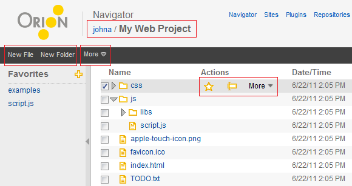
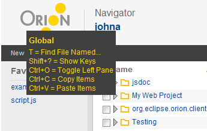
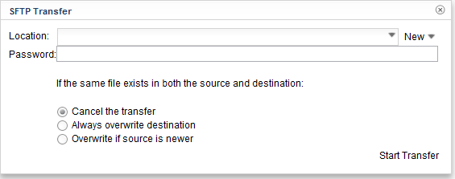
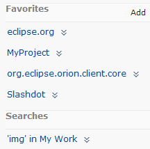

The Navigator page is your primary location for browsing and manipulating files in Orion. The page can be focused on any folder, including the root folder associated with each Orion user. The current folder being displayed is shown below the word Navigator in the title area, with a breadcrumb showing the complete path to the folder. You can browse through a directory hierarchy either by clicking on a folder to open a Navigator page on that folder, or by expanding the tree to show children in the same page. You can navigate upwards by clicking a path in the breadcrumb, or by clicking Go Up (Alt+Up on the keyboard). Clicking a file will open a page for that file. For source code files (JavaScript, HTML, CSS), clicking on a file will open the Coding page.
Commands for operating on files in the Navigator appear in several places, depending on what files and folders they are operating upon. Commands that operate directly on the root folder of Navigator are displayed in the tool bar. Commands that operate on individual files and folders in the list appear in the drop-down menu next to that file or folder. Commands that operate on the files selected in the table are shown in the More menu in the tool bar.

Some commands are also accessible using the keyboard. Type '?' to display a list of available commands:

To create new files and folders in the current folder, click New File or New Folder in the tool bar. To create files within another folder use the drop-down menu next to that folder in the list.
Delete files by selecting Delete from the menu next to a file or folder. To delete several files at once, select them using the check boxes and click Delete in the More menu in the toolbar:
To rename a file, select Rename in the resource drop-down menu. If you change your mind you can hit the Esc key to cancel the rename.
There are two methods available for copying files in Orion. The first method uses the clipboard:
You can also copy and move files using menu commands.
Hint: Create a Favorite for any folder you frequently copy or move files into. Favorites are always displayed as destinations in the Copy to and Move to menus, so this saves you some extra navigation to select your destination folder.
To import files from your local computer, do the following:
You can also import files from another networked computer using the SSH File Transfer Protocol (SFTP):

To export files to your local computer, simply click Export as zip in the drop-down menu next to any folder. The contents of that folder will be downloaded to your local computer as a zip file. Use your browser's download view to find the downloaded file.
You can also export files to another networked computer using the SSH File Transfer Protocol (SFTP):
There are a couple of different ways to search using the Navigator page:
A global search and replace can be performed by first running a search from the search box, and then supplying a replace term in the Search Results page.
The left hand side of the Navigator page shows a panel listing bookmarked links, referred to as Favorites in Orion. Click Make Favorite in the Actions column to add any file or folder as a favorite. You can also save any web site address as a favorite by clicking the Add Favorite icon within the Favorites panel. Search results can also be marked as favorites from the Search Results page. Current favorites can be renamed and deleted by clicking the command icons that appear when hovering over any favorite in your list.

You can navigate through the listed files in the Navigator using your keyboard:
This document is maintained in a collaborative wiki. If you wish to update or modify this document please visit http://wiki.eclipse.org/Orion/Documentation/User_Guide/Reference/Navigator_page